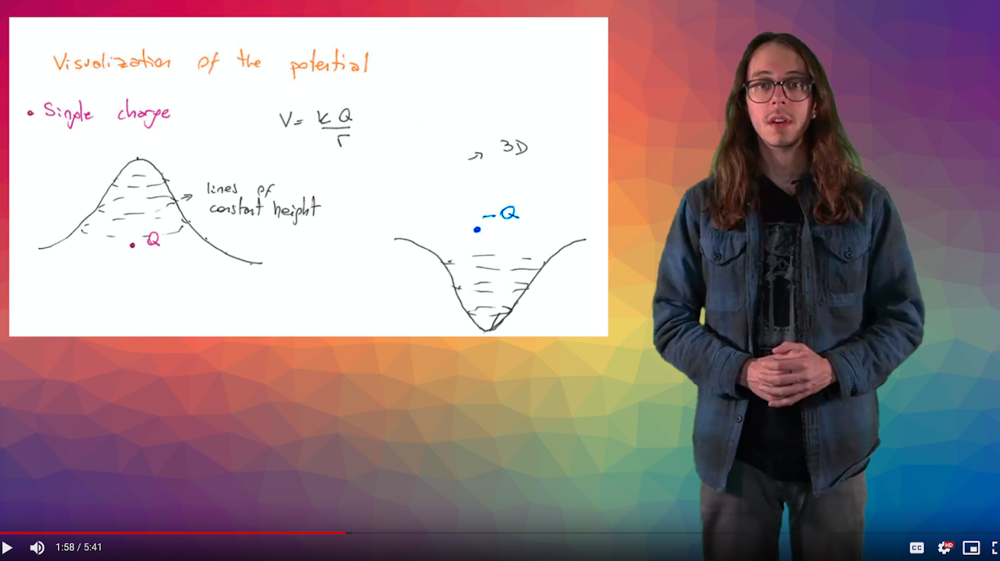

This is the personal and highly professional website of Dr. Ethan D. Jahn
Teaching
During grad school I was a teaching assistant (TA) for many years. I mostly ran discussion sections which involved some lecturing, some improvisational question-and-answer sessions, and some guided activities, including group problem-solving. Here are the courses I TA'd for:
- General Electives
- PHYS 10: “How Things Work”
- PHYS 18: “Energy and the Environment”
- Introductory, Algebra-Based
- PHYS 2LA: Mechanics Laboratory
- PHYS 2B: Thermodynamics & Fluids
- Introductory, Calculus-Based
- PHYS 40A: Mechanics
- PHYS 40C: Electricity & Magnetism
- Upper-Division
- PHYS 111: Astrophysics & Stellar Astronomy
- PHYS 142W/190: Individual Study & Scientific Writing (online replacement for senior laboratory)
I also received funding through the Univeristy of California's Innovative Learning Technology Initiative (now UC Online) to create educational videos supplementing PHYS 40C.
I wrote, filmed, and edited 10(?) videos covering concepts in electricity and magnetism.
After grad school I taught introductory calculus based physics to eager young minds at a handful of community colleges in souther